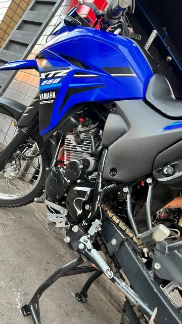

Serviços e revisão
O que a oficina faz, e o que entra numa revisão programada.
Da troca de óleo ao motor aberto
Oficina completa e loja de peças na mesma porta. Você não sai daqui com uma lista de peças para procurar em outro lugar.
01Revisão programadaChecklist por faixa de quilometragem — não “o que der pra ver”
02Troca de óleoÓleo, tela e filtro conforme o sistema da sua moto
03RelaçãoCorrente, coroa e pinhão. Limpeza, regulagem e kit completo
04FreiosPastilha, lona, disco e sangria do sistema
05SuspensãoBengala, retentor, óleo de bengala e amortecedor
06Elétrica e bateriaMoto que não pega, farol, seta, chicote e teste de carga
07PneusTroca, montagem e calibragem — com a moto no elevador
08Regulagem de válvulasA folga certa decide partida, consumo e vida do motor
09DiagnósticoChegou com barulho e não com pedido? A moto entra para avaliação
10Venda de peçasOriginal e paralela, com a aplicação conferida no ato

Revisão não é só trocar o óleo
Quem roda o dia inteiro faz em um mês o que uma moto de passeio faz em um ano. A revisão de faixa existe para achar a peça no fim da vida antes que ela leve outra junto — é aí que a conta fica cara.
O que entra na revisão
- Óleo e sistema de filtragem conforme o modelo
- Filtro de ar e vela
- Limpeza, lubrificação e regulagem da relação
- Conferência de freio e pneu
- Conferência de suspensão e elétrica
- Relatório do que está no ponto de troca e do que ainda aguenta
Sua moto está parada agora?
Manda o modelo e o que está acontecendo. A gente responde com preço e prazo.
Falar no WhatsApp